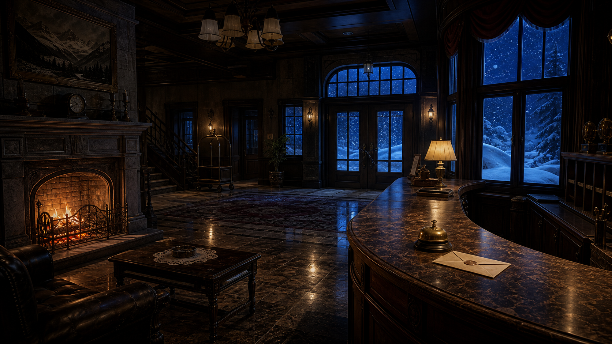

吹雪ホテルストーリー から 脱出 そして 推理へ

吹雪ホテル
風除室の向こうで雪が窓を叩いている。まずはフロント周辺を調べよう。
STORY ESCAPE MYSTERY
奥白岳の稜線に建つ吹雪ホテル。大雪で送迎道路が閉ざされた夜、停電の直後に宿泊客の蓮見岬が姿を消した。外へ出た形跡はなく、残されたのは濡れた足跡、暖炉で焦げたメニューカード、そして「午前零時の客を外へ出さないでください」と書かれた封筒だった。
あなたは蓮見と古い縁を持つ人物から、館内で起きたことを確かめてほしいと頼まれる。ホテル内を移動し、気になる場所を調べ、集めた品を人物に見せながら、閉ざされた夜の真相へ近づいていく。

風除室の向こうで雪が窓を叩いている。まずはフロント周辺を調べよう。